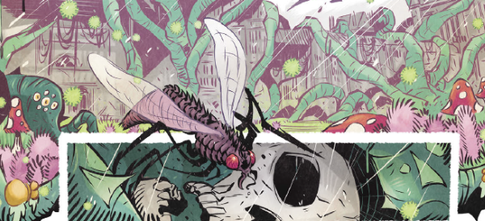

Starting out in Regened as an introduction to a wider series, it immediately soft-reboots when said series appears (in order to up-age a central co-protagonist).
We're in a post-apocalyptic Britain, where the flora and fauna have turned against humanity. Borrowing from zombie tropes, humans can also be infected and transformed. Summary: dayglo, British The Last of Us.
Art by Luke Horsman
| Story Title | Parts | Pages | w indicates a wraparound coverCovers | Year(s) | Issues | Writer | Artist | Colourist | Letterer |
|---|---|---|---|---|---|---|---|---|---|
| The Bunker | 1 | 10 | 0 | 2021 | 2256R | Cavan Scott | Luke Horsman | John Charles | Jim Campbell |
| Book One | 1 | 10 | 2303: Luke Horsman 2307: Luke Horsman 2 | 2022 | 2301-2305, 2307-2311 | Cavan Scott | Luke Horsman | <-- | Annie Parkhouse |
| year | episodes | pages |
| 2011 | 0 | 0 |
| 2012 | 0 | 0 |
| 2013 | 0 | 0 |
| 2014 | 0 | 0 |
| 2015 | 0 | 0 |
| 2016 | 0 | 0 |
| 2017 | 0 | 0 |
| 2018 | 0 | 0 |
| 2019 | 0 | 0 |
| 2020 | 0 | 0 |
| 2021 | 1 | 10 |
| 2022 | 1 | 10 |
| 2023 | 0 | 0 |
| 2024 | 0 | 0 |
| 2025 | 0 | 0 |
| 2026 | 0 | 0 |
| 2027 | 0 | 0 |
| 2028 | 0 | 0 |
| 2029 | 0 | 0 |
| 2030 | 0 | 0 |
| 2031 | 0 | 0 |
| 2032 | 0 | 0 |